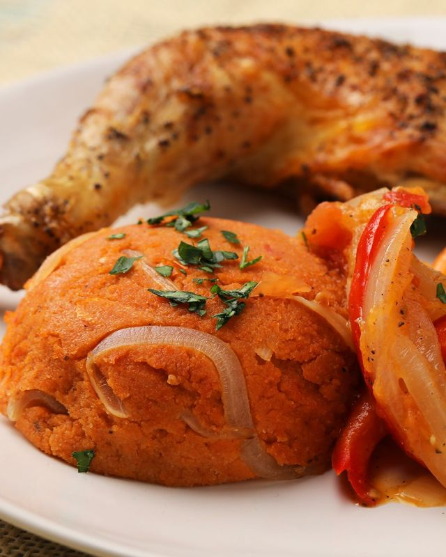
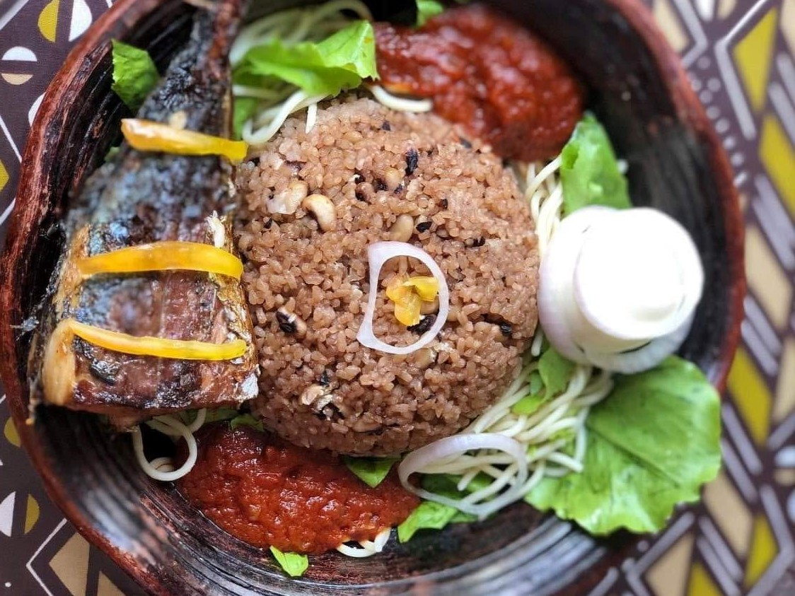
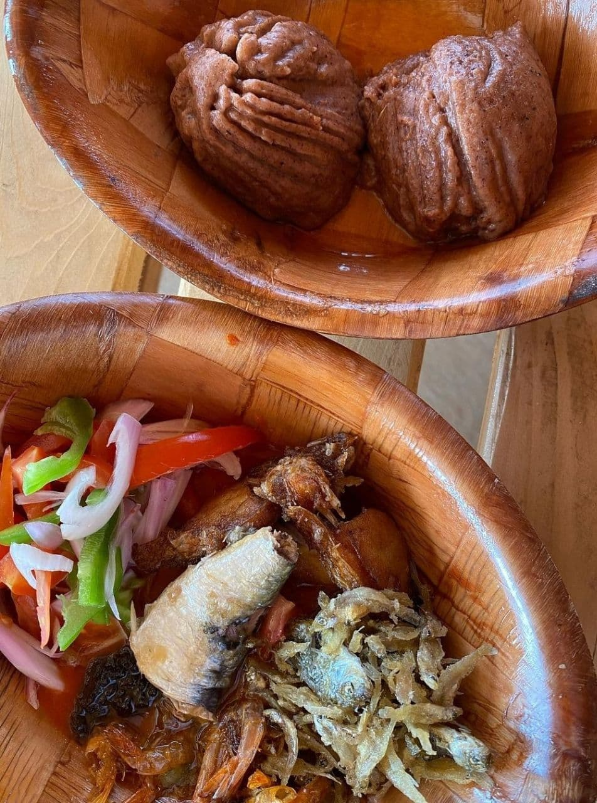
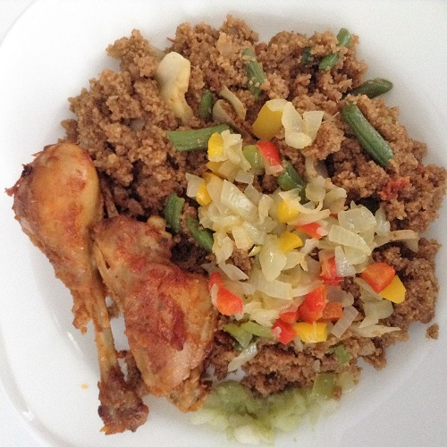
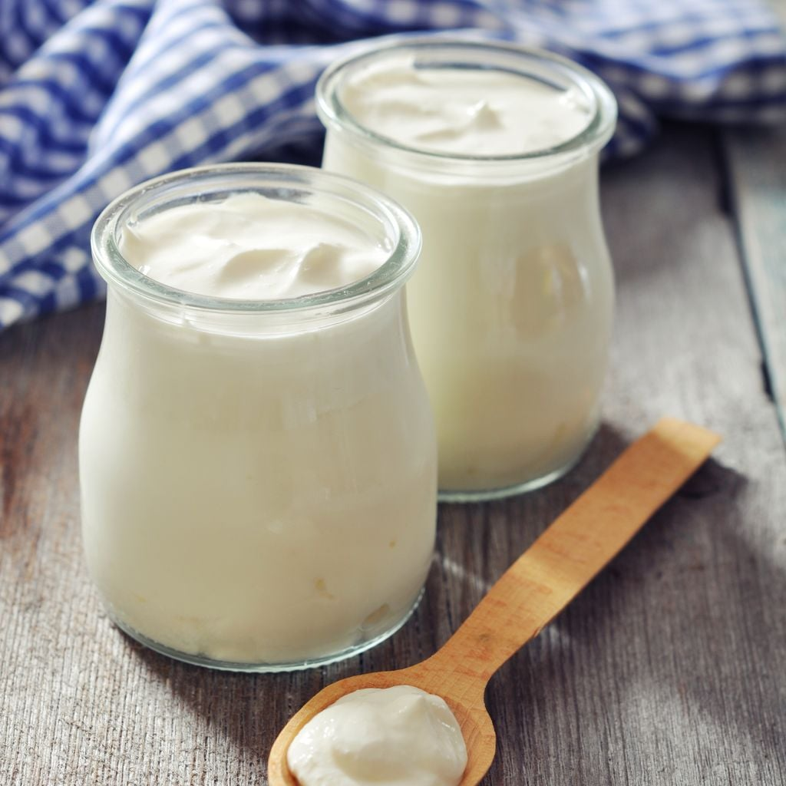

🍽️ Allons découvrir quelques plats ensemble 🍽️




Amoureux ou amoureuse de la cuisine, ce site est pour toi : ici, nous partageons diverses saveurs 🫧
Recettes simples et gourmandes





Amoureux ou amoureuse de la cuisine, ce site est pour toi : ici, nous partageons diverses saveurs 🫧